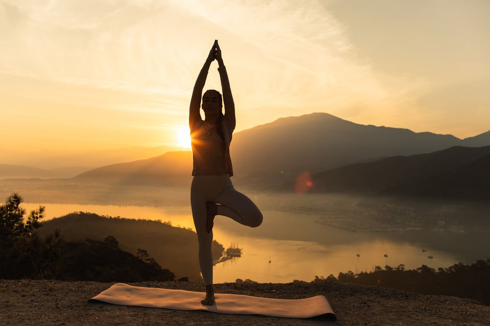
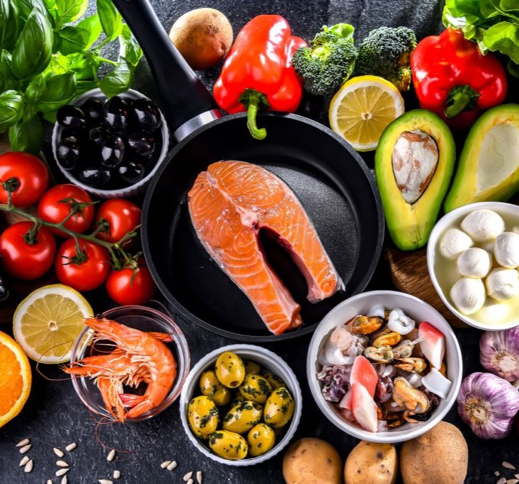
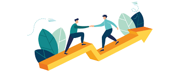
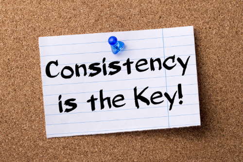

How to Lose Weight & Achieve a Healthy BMI (For Overweight Individuals)
If your BMI is 25 or higher, you fall into the overweight category.
Carrying excess weight can increase your risk of heart disease, diabetes, joint pain, and other health issues.
The good news? With proper nutrition, regular exercise, and lifestyle changes, you can shed extra weight safely and sustainably — without crash diets!
Let's get started on your journey to a healthier you!

Follow a Healthy, Sustainable Diet
Weight loss isn’t about starving yourself—it’s about eating smarter and fueling your body with nutritious foods. Foods to Focus On.
More Fruits & Veggies – Low in calories, high in fiber = keeps you full longer! Chicken, fish, beans, tofu, eggs (supports muscle & burns fat).
Brown rice, quinoa, oats, whole wheat bread (slower digestion, more energy).
Healthy Fats like Avocados, nuts, olive oil (help regulate hormones & reduce cravings). Water, Water, Water! – Stay hydrated and cut out sugary drinks.

Exercise Regularly for Weight Loss
The best way to burn fat and lose weight is by combining cardio + strength training.
Best Workouts for Weight Loss:
Walking, running, cycling, swimming (burns calories fast). Squats, lunges, push-ups, lifting weights (builds muscle & boosts metabolism). Stretching, yoga, or foam rolling (prevents injury).Tip: Find an activity you enjoy—you’re more likely to stick to it long-term!

Eat Fewer Calories Without Starving
To lose weight, you need to eat fewer calories than you burn. But don’t starve yourself—focus on nutrient-dense meals that keep you satisfied.
How to Reduce Calories Without Feeling Hungry:
Fill half your plate with veggies – Low in calories, high in fiber. Use smaller plates this tricks your brain into feeling full. Drink water before meals to reduce overeating. Eat more protein to keep you fuller longer. Avoid eating late at night because late snacking leads to fat storage.Tip: Track your food intake with apps like MyFitnessPal to stay accountable.
.jpg)
Get Enough Sleep & Manage Stress
Lack of sleep and stress increase cravings for junk food and slow down weight loss.
Healthy Habits for Better Sleep & Less Stress:
Sleep 7-9 hours per night to help regulate appetite hormones. Reduce screen time before bed. Simply no phones or TV 1 hour before sleep. Practice relaxation, meditation, deep breathing, or yoga. Do activities you enjoy like hobbies, spending time with loved ones, etc.Tip: High stress = high cortisol = more belly fat! Find ways to relax daily.
Track Your Progress (But Be Patient!)
Weight loss is a slow & steady journey—don’t expect overnight results! Stay consistent, and you will see changes.
How to Monitor Your Progress:
Weigh yourself once a week (not daily—weight fluctuates!). Take progress photos—visible changes motivate you! Measure waist, arms, and thighs instead of only relying on weight.
Notice how your clothes fit—they often show progress before the scale does.
Tip: Celebrate small victories! Even losing 1-2 lbs per week is great progress.

Stay Consistent & Make It a Lifestyle!
Losing weight isn’t about a short-term diet—it’s about creating sustainable habits.
Simple Weight Loss Habits That Work: Cook more at home to control what goes into your meals.
Move every day. Even 30 minutes makes a difference! Don’t deprive yourself and allow occasional treats to prevent binge eating.
Stay patient & positive. Progress takes time, but you’ll get there!
Tip: Surround yourself with supportive people who encourage your journey!
